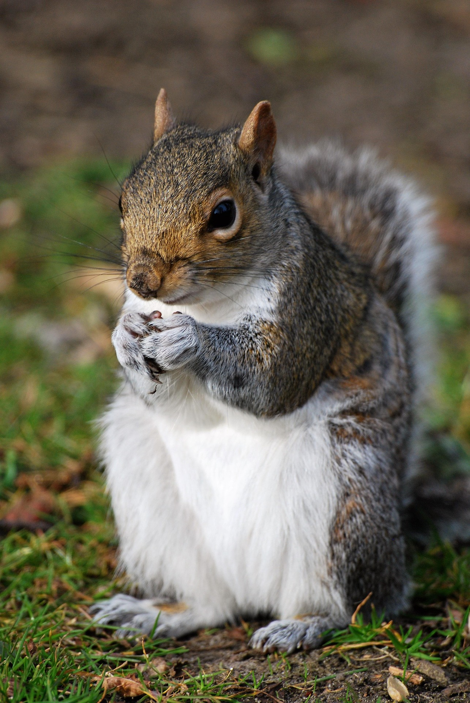
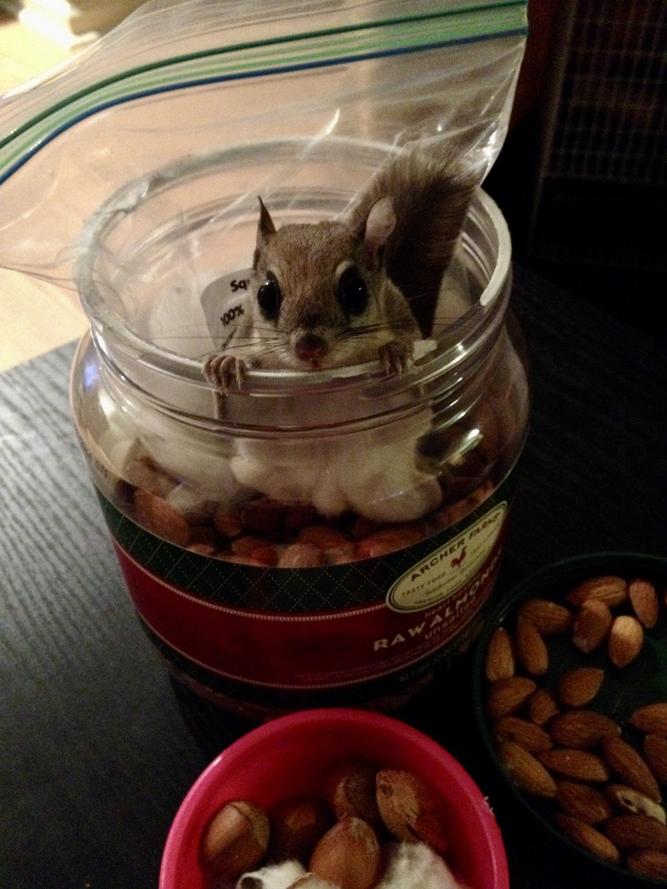
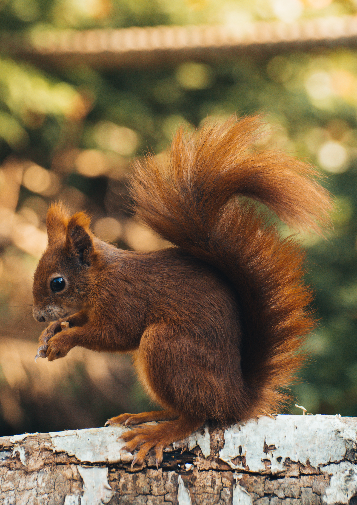

Squirrel Showcase
Meet some of the forest's most talented acorn collectors.

Eastern Gray Squirrel
Famous for its impressive memory and ability to hide thousands of acorns every year.

Flying Squirrel
A nighttime acorn adventurer that can glide between trees with remarkable precision.

Red Squirrel
Small, speedy, and fiercely protective of its acorn stash and woodland territory.